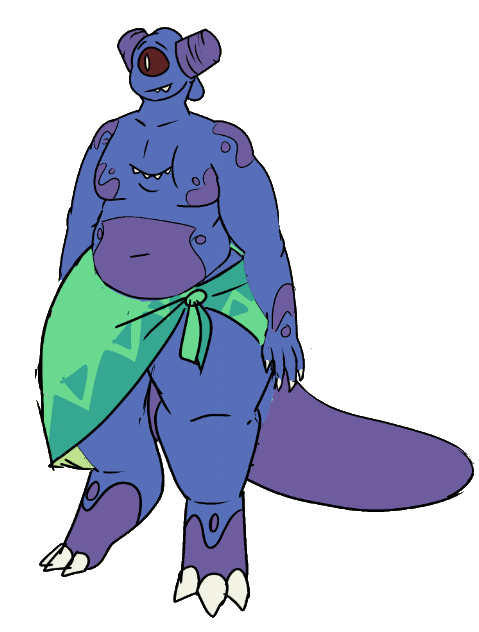

Iekika
Iekika | |
|---|---|
|  | |
| Full Name | Iekika |
| Pronouns | She/Her |
| Species | Blue Imp |
| Age | 23 |
| Height | 170cm / 5'7" |
| Occupation | None |
| Relationships |
Amber - Partner Makana - Ex |
| Favorite Meal of the Day | Breakfast |
| Mouths | 2 |
Backstory
Iekika was born on the central island of the Paradise Islands, raised by her family and the community around her. Her impulsivity and boundless energy led to her being trained as a hunter, her guardians hoping it would give her something to channel her energy into, and hopefully develop some discipline and patience.
Early in her life, Iekika began receiving visions from the island, foretelling future events. She quickly became a sort of prophet for the central island, her visions leading to better harvests, discovering new resources, and generally leading to the betterment of imps. To preserve her, the island also warned Iekika of coming dangers - prophecies of her death, infrequent enough to be tolerable, but frightening enough to leave deep impacts on Iekika. She doesn’t readily discuss it, still.
During her training, she met Makana, another imp who was studying weapons. Makana would design something and pass it off to Iekika, for her to test. Makana in particular enjoyed making polearms, a fondness that rubbed off on Iekika and eventually lead to a birthday gift from Makana, a wooden spear enchanted to posses infinite flexibility. Along the way, the two developed feelings for one another, and started pursuing a casual relationship in their free time.
Everything was going pretty good for Iekika, and she felt like she truly belonged where she was. This was, of course, not to last.
Iekika received a violent vision of an incoming hurricane, that could threaten to destroy the entire imp population. After alerting her village, she decided to sail to one of the neighboring islands to spread the warning. Makana and the other imps begged her not to go, arguing she wouldn’t make it in time, but Iekika assured them she would return soon and that she would be fine.
An hour later, and Iekika’s boat was capsized, her body tossed among the ocean currents until her head struck a rock underwater and she lost consciousness.
She floated adrift for several days before washing up on a beach on the mainland. A day or so later, a human woman, Amber, stumbled upon her body and took her to her home, where she awoke, confused and lost. She clobbered Amber in a mix of surprise and fear, before the two of them established some mutual understanding.
Amber offered to help Iekika find a way to get home, under the condition Iekika help a little with her daily activities. Being so far from the island, too, she was unable to receive any visions. She was on her own. Now, she’s trying to adapt to humans bizarre ways of living, without getting too comfortable in what’s meant to be a temporary living situation.
As her time on the mainland continued, she found herself taking a liking to Amber. Maybe a bit more than just a liking. She isn't sure how she feels about it.
Character
Iekika is energetic, impulsive, and maybe a little dumb sometimes. It’s been her improvisation skills keeping her alive this whole time, certainly not her ability to plan.
It’s rare to see her not tapping her claw, swishing her tail back and forth, fidgeting with her hands, chewing one of her lips, or moving somehow. The more she has to sit still, the more she’ll resist it. She has similar results when she tries to focus on anything she’s not already interested in, losing focus and becoming distracted easily.
The one area this fails to apply most of the time is fighting. Iekika loves getting into skirmishes and sparring, and is able to channel her boundless energy into a force to be reckoned with. Sports and physical competition in general, she has a predisposition towards. A bit competitive, to boot.
She has a deep desire to have ‘her thing’ - whether that be her place in society, her role in the friend group, her hobby, etc etc, she never feels content just wandering. In her element, she’s confident, controlled, while outside she becomes significantly more insecure and uncertain.
Powers
As an Imp, Iekika is trained in several psychic abilities.
- Telepathy - Iekika can read the surface level thoughts of other living creatures.
- Empathy - Iekika feels the emotions (and general mental state) of those she's in close proximity to, and vice versa.
Trivia
- Iekika’s tail is enormous by imp standards, the result of a rare genetic mutation. She quietly takes some pride in this.
- Makana’s preferences rubbed off on her, and she has a distinct affection for polearms - spears, specifically. She’ll use other weapons, if necessary, though refuses to wield swords.
- She has mild sensory issues, largely to do with clothing - anything that covers her chest mouth is a no-go.
- Iekika is known for having a large appetite, something she suspects manifested in opposition to impish culture’s frugal, rationed lifestyle.
- Beyond its obvious use as a weapon, her spear is a comfort object for her and she brings it with her everywhere.
- She’s exceptionally good at catching things.
- She files her horns down, similarly to how someone might get a haircut. Her horns can fit a solo cup over them almost perfectly.
- Bottom